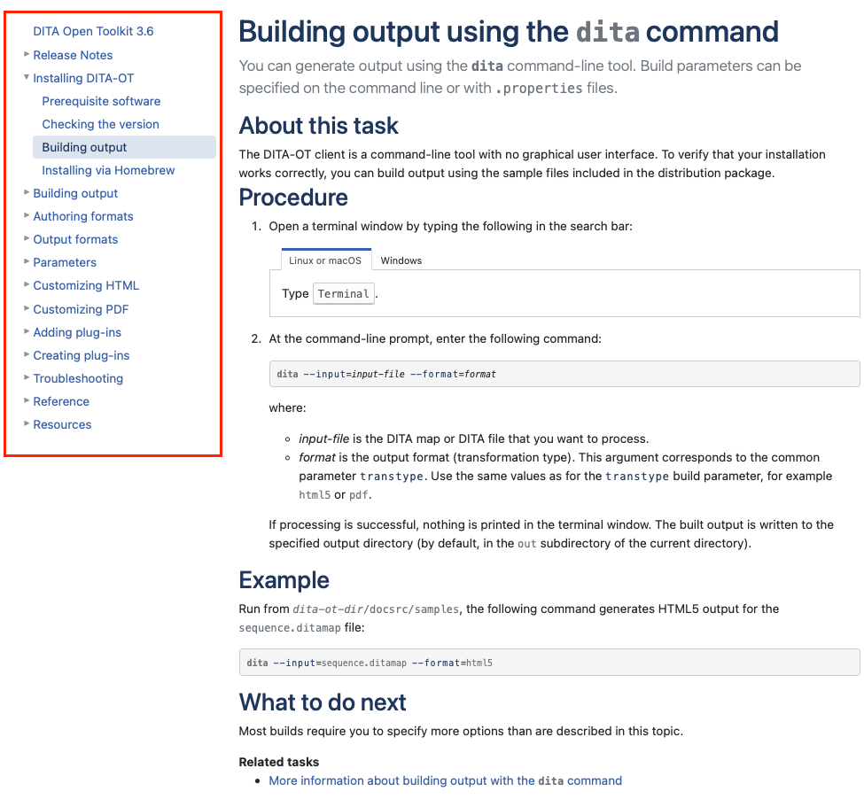
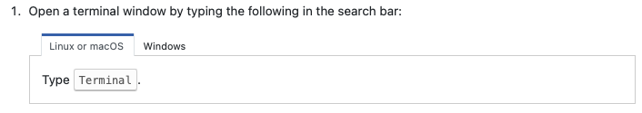
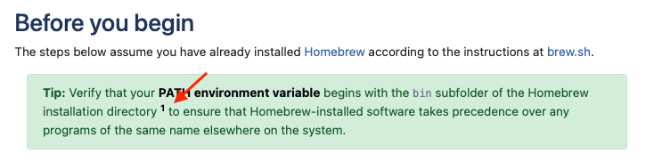
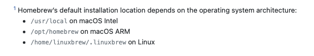
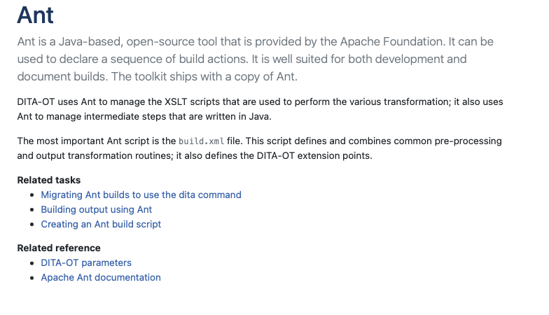
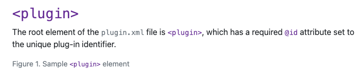

DITA源码阅读
正如学习编码时阅读软件源代码一样，学习DITA时，阅读文档的dita源码也是一种很好的学习习惯。这里以DITA-OT的文档为例，带大家阅读一下文档，并与dita源码相联系。
文档
文档导航
如图片左侧导航所示，左侧为文档导航区，主要通过ditamap来实现。

对应的ditamap源码
<map xml:lang="en-US">
<title>DITA Open Toolkit <keyword keyref="release"/></title>
<topicref keyref="landing-page"/>
<topicref keyref="release-notes">
<topicref keyref="release-history"/>
</topicref>
<topicref keyref="installing-client">
<mapref href="../topics/installing.ditamap"/>
</topicref>
<topicref keyref="building-output">
<mapref href="../topics/publishing.ditamap"/>
</topicref>
<topicref keyref="input-formats" collection-type="family">
<mapref href="../topics/input-formats.ditamap"/>
</topicref>
<topicref keyref="output-formats">
<mapref href="../topics/transformations.ditamap"/>
</topicref>
<topicref keyref="parameters">
<mapref href="../parameters/parameters.ditamap"/>
</topicref>
<topicref keyref="html-customization" collection-type="family">
<mapref href="../topics/html-customization.ditamap"/>
</topicref>
<topicref keyref="pdf-customization">
<mapref href="../topics/pdf-customization.ditamap"/>
</topicref>
<topicref keyref="adding-plugins">
<mapref href="../topics/using-plugins.ditamap"/>
</topicref>
<topicref keyref="custom-plugins">
<mapref href="../topics/creating-plugins.ditamap"/>
</topicref>
<topicref keyref="troubleshooting-overview">
<mapref href="../topics/troubleshooting.ditamap"/>
</topicref>
<topicref keyref="reference">
<mapref href="../reference/reference.ditamap"/>
</topicref>
<topicref keyref="dita-and-dita-ot-resources">
<mapref href="../topics/dita-resources.ditamap" toc="no"/>
<mapref href="../topics/dita-ot-day-videos.ditamap"/>
</topicref>
<topicgroup processing-role="resource-only">
<mapref href="common-resources.ditamap"/>
</topicgroup>
</map>
Choicetable
通过Tab的形式，实现了信息的折叠。

源代码
<chrow platform="linux mac">
<choption>Linux or macOS </choption>
<chdesc>Type <userinput>Terminal</userinput>.</chdesc>
</chrow>
<chrow platform="windows">
<choption>Windows</choption>
<chdesc>Type <userinput>Command Prompt</userinput>.</chdesc>
</chrow>
</choicetable>
footnote
 
<fn>Homebrew’s default installation location depends on the operating system architecture:
<ul>
<li><filepath>/usr/local</filepath> on macOS Intel</li>
<li><filepath>/opt/homebrew</filepath> on macOS ARM</li>
<li><filepath>/home/linuxbrew/.linuxbrew</filepath> on Linux</li>
</ul>
</fn> to ensure that Homebrew-installed software
relationship table

<title>CTR: Ant topics</title>
<relheader>
<relcolspec type="concept"/>
<relcolspec type="task"/>
<relcolspec type="reference"/>
</relheader>
<relrow>
<relcell>
<topicref keyref="ant"/>
</relcell>
<relcell>
<topicgroup collection-type="family">
<topicref keyref="building-with-ant"/>
<topicref keyref="creating-an-ant-build-script"/>
</topicgroup>
</relcell>
<relcell>
<topicref keyref="parameters_intro" linking="targetonly"/>
<topicref keyref="ant-manual">
<topicmeta>
<linktext>Apache Ant documentation</linktext>
</topicmeta>
</topicref>
</relcell>
</relrow>
<relrow>
XML element reference
引用XML文件中的xml元素

<title><xmlelement>plugin</xmlelement></title>
<p>The root element of the <filepath>plugin.xml</filepath> file is <xmlelement>plugin</xmlelement>, which has a required <xmlatt>id</xmlatt> attribute set to the unique plug-in identifier.</p>